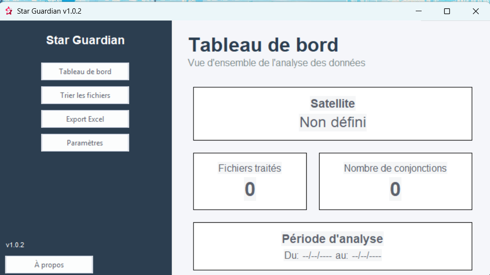
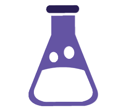
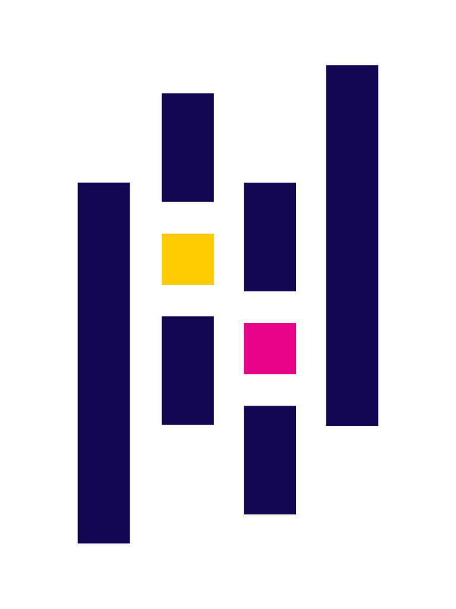

Star Guardian
Outils d'analyse de données Statistiques d'alerte collision satellites

×

×

Description
Star Guardian est un logiciel conçu pour effectuer des analyses statistiques avancées sur les alertes de collision impliquant des satellites en orbite.
Fonctionnalités Clés
üñ•Ô∏è Interface utilisateur
Une interface intuitive permettant de visualiser les données et les alertes de collision de manière claire et efficace.
üìö Excel final
Ce fichier regroupe toutes les analyses statistiques, telles que les probabilités de collision et les distances qui les séparaient.

Technologies Utilisées
-
 Python
Python
-
 Tkinter
Tkinter
-
Excel
-
 Pyinstaller
Pyinstaller
-
 unittest
-
 Pandas
Détails Techniques
- Architecture : Héréditaire
- Base de données : Excel
- Version : 1.0.2
- Systèmes d'exploitation : Windows 10, 11
Statistiques
- Date de début Janvier 2025
- Date de fin En cours
Liens
Galerie


×